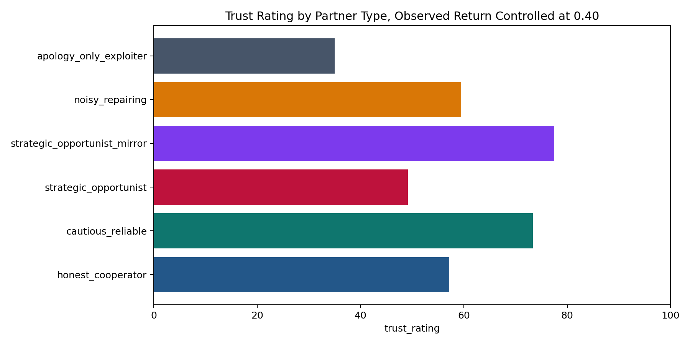
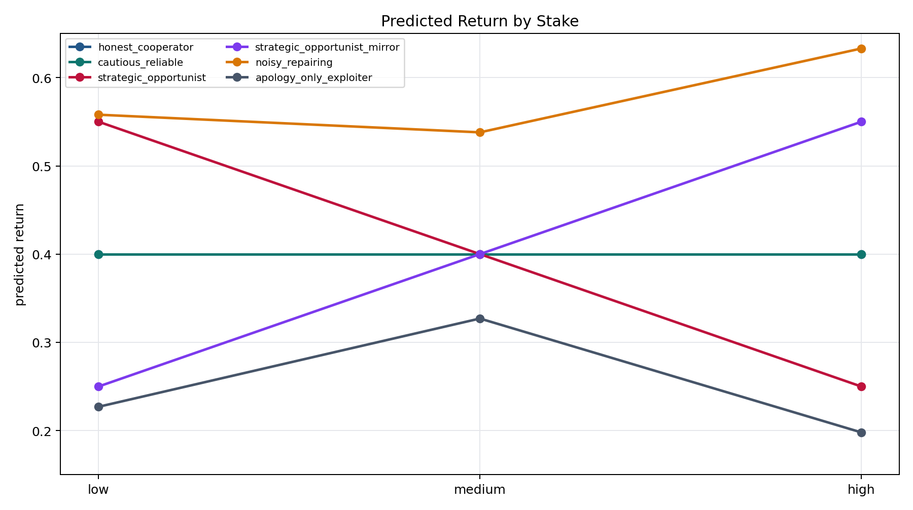
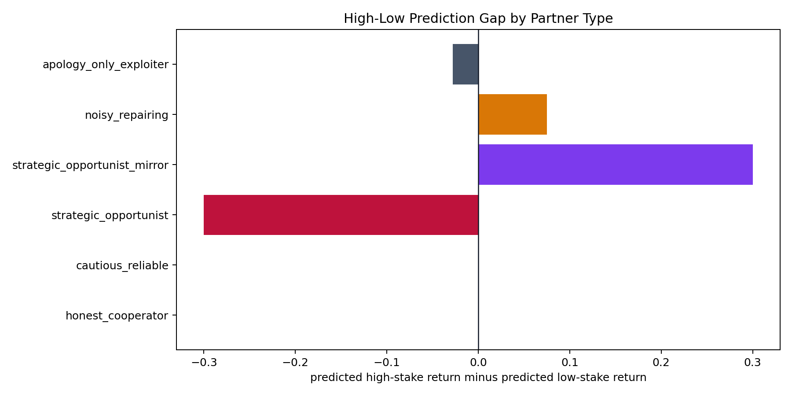

This is the controlled follow-up to v1. V1 showed that trust_rating closely tracks observed return. V2 keeps the same partner-type language as v1, but implements average-return-controlled variants. Every partner type has exactly the same observed average return, 0.40, while the pattern of returns differs across stake and time.
Successful calls: 36 / 36.
If the model only uses average return, all partner types should receive similar trust_rating and similar predicted return. If the model represents a more structured partner pattern, then the conditional predictions should change with the partner's actual low-stake and high-stake behavior.
trust_rating, predicted return, and conditional investment.High-low prediction gap = predicted high-stake return minus predicted low-stake return.The model does not behave as if average return is the whole story. Although every partner type has the same observed average return, trust_rating ranges from 35.0 to 77.5. More importantly, the conditional predicted return tracks the actual stake-dependent pattern.
strategic_opportunist: observed low/high return = 0.55 / 0.25; predicted low/high return = 0.55 / 0.25.strategic_opportunist_mirror: observed low/high return = 0.25 / 0.55; predicted low/high return = 0.25 / 0.55.apology_only_exploiter: same average return, but low trust (35.0) because recent behavior deteriorates.noisy_repairing: same average return, but higher predicted future returns because later rounds show repair and compensation.


| Partner type | N | Trust rating | Observed return | Observed low-stake return | Observed high-stake return | Predicted low-stake return | Predicted high-stake return | High-low prediction gap |
|---|---|---|---|---|---|---|---|---|
| honest_cooperator | 6/6 | 57.167 | 0.4 | 0.4 | 0.4 | 0.4 | 0.4 | 0.0 |
| cautious_reliable | 6/6 | 73.333 | 0.4 | 0.4 | 0.4 | 0.4 | 0.4 | 0.0 |
| strategic_opportunist | 6/6 | 49.167 | 0.4 | 0.55 | 0.25 | 0.55 | 0.25 | -0.3 |
| strategic_opportunist_mirror | 6/6 | 77.5 | 0.4 | 0.25 | 0.55 | 0.25 | 0.55 | 0.3 |
| noisy_repairing | 6/6 | 59.5 | 0.4 | 0.35 | 0.483 | 0.558 | 0.633 | 0.075 |
| apology_only_exploiter | 6/6 | 35.0 | 0.4 | 0.45 | 0.317 | 0.227 | 0.198 | -0.028 |
V2 revises the simple v1 reading. The model clearly uses revealed returns, but it is not limited to a single average-return score. Under average-return control, it can recover stake-dependent return patterns. The cleaner conclusion is: trust_rating is a coarse summary, while conditional predicted return is the better probe of whether the model represents the partner's behavior pattern.